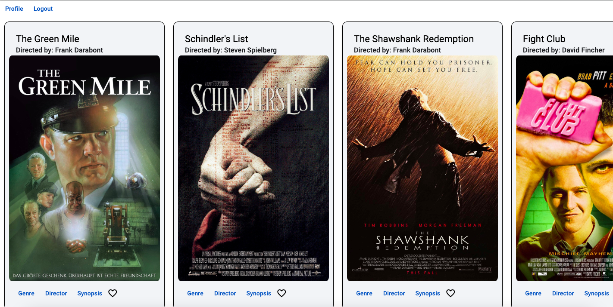

myFlix App, Angular
Github
Link
The same myFlix application I built before this time with ANgular instead of React.

Using Angular to rebuild the myFlix application I had built using
react. This allowed me to explore a different framework in an
application I already knew a lot about.